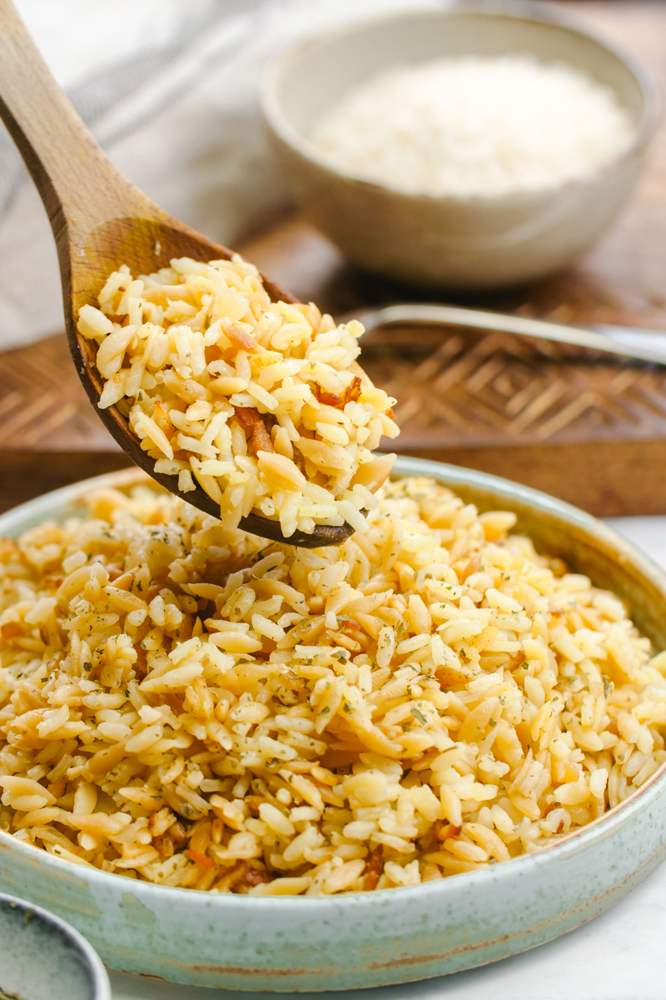

Kyiv Chicken
About the Dish
Kyiv chicken is a classic Ukrainian dish consisting of tender chicken breast filled with garlic butter, breaded and fried until golden. It is crispy on the outside and juicy on the inside.
Ingredients
- Chicken breasts – 500 g 18 oz
- Butter – 120 g 4.2 oz
- 2 eggs
- Flour – 60 g 2.1 oz
- Cooking oil – for frying
- Breadcrumbs
- 2 cloves garlic (minced)
- Salt and pepper
- Fresh parsley
Cooking Process
- Mix butter, garlic, and parsley. Shape into a log and freeze.
- Pound chicken breasts flat and season with salt and pepper.
- Place butter in the center and tightly roll the chicken.
- Chill for 30 minutes.
- Coat in flour, eggs, and breadcrumbs.
- Fry at 180°C 356°F until golden.
- Bake for 10 minutes to finish cooking.
Side Dishes

Mashed potatoes

Steamed vegetables

Rice pilaf

Fresh green salad